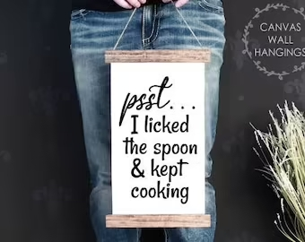

<!DOCTYPE html>
<html lang="en"></html>

<head>
    <meta charset="utf-8">
    <title>Odin Recipes</title>
</head>

<body>
    
    <h1>Odin Recipes</h1>
    <p>On this website you will find some very useless recipes. If you really want to know how to cook these dishes, just google them.</p> 
    <ul>
        <li><a href="./recipes/rendang.html">Rendang</a></li>
        <li><a href="./recipes/stamppot.html">Stamppot</a></li>
        <li><a href="./recipes/pasta-pesto.html">Pasta pesto</a></li>
    </ul>
</body>